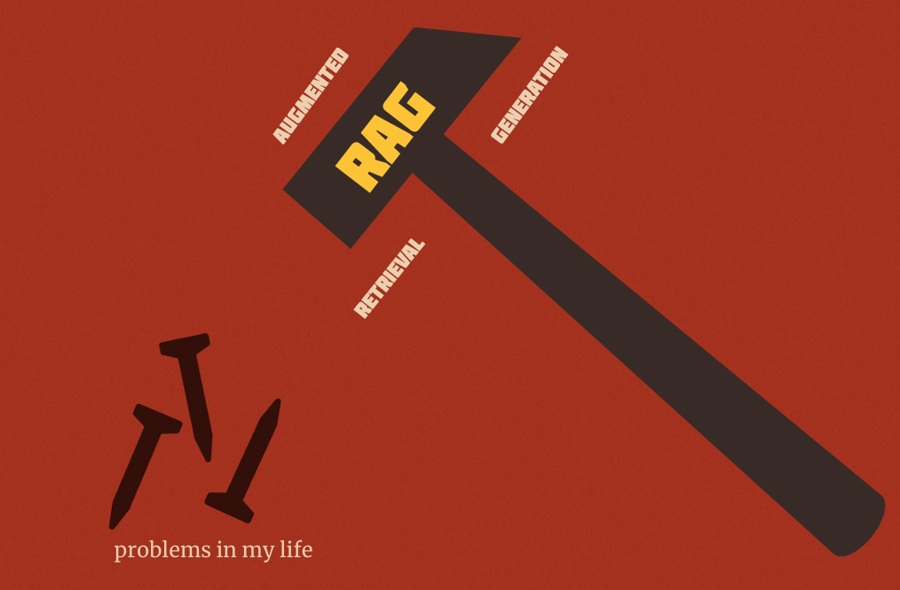
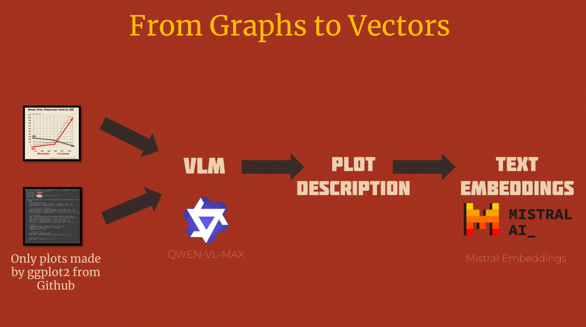

MyNextChart: How I’m using AI for data visualization and it’s not what you think
Intro
This is a short blog post to introduce my new project, MyNextChart which came from my frustration with keeping track of 1000s of data visualizations inspirations I saw on the internet and my eternal struggle to categorize them and make sense of them.
I presented this project at PyData Amsterdam 2025 this year and you can find the recording here: MyNextChart: How I Use AI for Data Visualization and It’s not to make Chart Slop. So this blog post will be just a short summary of the talk without going into the details of the project. I’ll write more about the technical details of how I built this project in a future post.
Why I started this project
If you’re reading posts there is a big chance you have more than a 100 open tabs in your browser that you want to read later but never get to it? Or you have 1000s of saved bookmarks on your Twitter, LinkedIn, and other social media accounts that you never get to looked at them.
I suffer from the same problem but probably even worse. I have around a few thousands or more bookmarked tweets, a few hundred bookmarked LinkedIn posts, and I have a few hundred open tabs in my browsers on different computers that I wanted to read look at but never get to it. One time I even realized that I had open tabs from 3 years ago!
A large part of my bookmarked posts and tweets consist of data visualizations articles and charts that I find interesting and want to take inspiration from them for my own data visualizations. To alleviate my problem I have been using a few different applications like Notion to save and organize my bookmarked charts (and articles).
I have been using these saved charts for inspiration when I’m working on a new data visualization project or for challenges such as #TidyTuesday or #30daychartchallenge. And sometimes I also scroll through github repositories for contribution made by others in the #TidyTuesday and #30daychartchallenge to find certain ways of doing things that I can use in my own projects (for example, how create spiral line charts).
| However, I realized that it was not practical to save all the charts I find interesting in Notion. The incoming stream of new charts and articles is way more than what I can save in Notion. |
| Besides that, the same problem still persisted! I almost never looked at the saved charts in my Notion database. And even when I did, it was hard to find what I was looking for among hundreds of saved charts. In the end, I realized that I was spending way more cataloging charts that actually looking at them or creaiing my own charts. |
At the time, I was working on our RAG (retrieval-augmented generation) solutions at my job (and I still do) and RAG became a hammer for me and every problem became naturally a nail.

So I thought what if instead of scrolling through my bookmarked charts and articles and hoping to find something interesting or useful, I could search for the type of charts that I’m looking for in natural language.
For example, what if I search for “circular bar charts” or “lection maps for germany” and get a list of relevant charts that match my query instead of looking through my large Notion gallery and hoping to spot something.
So, this became the start of mynextchart.com project. In essence it uses AI and embeddings to ‘understand’ and making them semantically searchable. In my talk at PyData Amsterdam 2025 I explained how I built this project and the technical challenges of building a semantic search engine for data visualizations. You can watch the recorded talk on YouTube.
